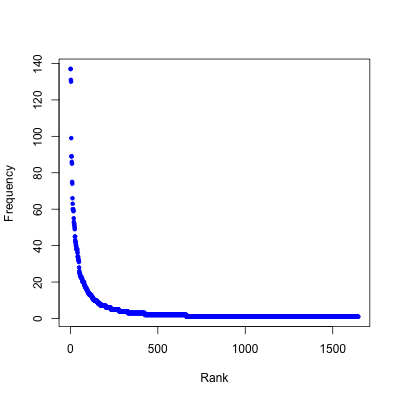
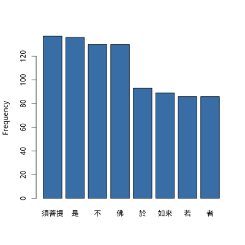
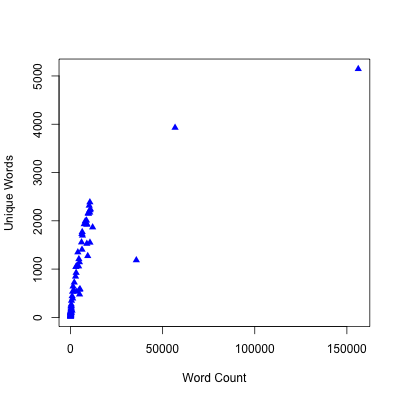
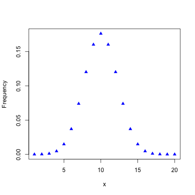
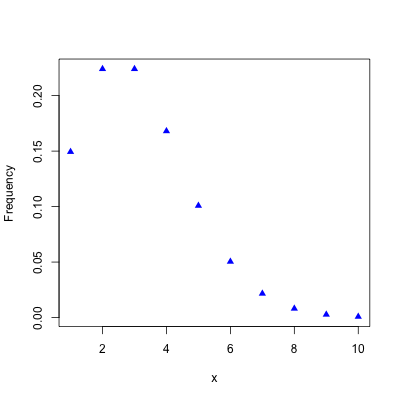
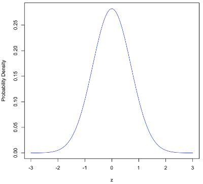
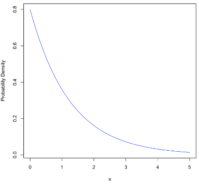
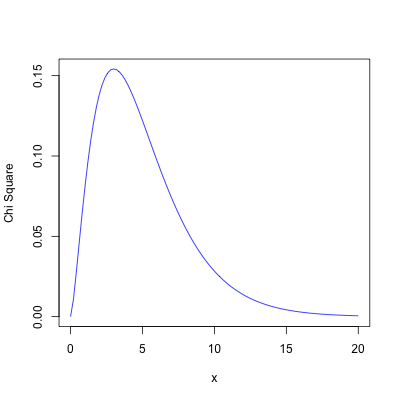
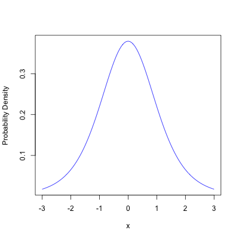
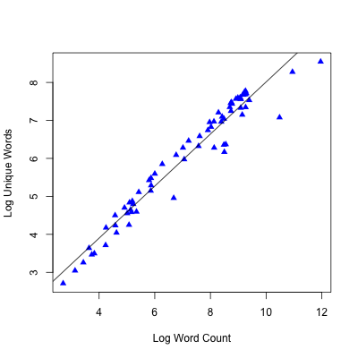

This page gives some incomplete notes on statistical background in analyzing Chinese text and analyzing quality of corpus data.
A corpus is a collection of texts, which may be used by linguists for studying the characteristics of language usage. (Bird, Natural Language Processing, 39) The NTI Buddhist Text Reader contains a corpus of Buddhist and classical Chinese texts. A small subset of the corpus is tagged part-of-speech taggs and gloss distinguishing word sense. The organization of the corpus is described on the page Text Management, Annotation, and Gloss on this web site. The tagging scheme is described on the page Part-of-Speech Tag Definitions. The raw data, including word frequencies, can be found at the NTI Buddhist Text Reader GitHub Project in the data/dictionary folder. They are tab delimited text files.
Word frequencies from the tagged subset of the corpus can found in the files unigram.txt and bigram.txt These are a tab delimited UTF-8 file with no header row. The unigram.txt file lists single word frequencies in the tagged corpus. The structure of the unigram.txt file is:
pos_tagged_text: The element text with POS tag and gloss in pinyin and English
element_text: The element text in traditional Chinese
word_id: Matching id in the word table (positive integer)
frequency: The frequency of occurence of the word sense (positive integer)
The bigram.txt file lists frequencies of two-word combinations. The structure of the bigram.txt file is:
pos_tagged_text: The element text with POS tag and gloss in pinyin and English
previous_text: The element text in traditional Chinese
element_text: The element text in traditional Chinese
word_id: Matching id in the word table (positive integer)
frequency: The frequency of occurence of the word sense (positive integer)
A tab delimited plain text list of summary statistcs for the corpus texts is included in the file corpus_stats.txt. The structure of the file is
source_name: the title of the text
word_count: the number of words in the text
character_count: the number of characters in the text
unique_words: the number of unique words in the text
There are a number of software tools for statistical modelling and may be used for text analysis. Initially, R will be discussed.
The R Project for Statistical Computing (http://www.r-project.org), or simply R, is an open source project, language, and platform. You can freely download and install R for Linux, Mac, and Windows from links in the project web site. The R project web site has links to introductory materials. I referred to the books by Knell (Knell, Introductory R: A Beginner’s Guide to Data Visualisation, Statistical Analysis and Programming in R) and Yau (Yau, R Tutorial with Bayesian Statistics Using OpenBUGS) in preparing the commands and scripts presented here.
R is a generic statistics platform. It is very handy for working through statistics problems in textbooks and trying stuff out rather than using a piece of paper and calculator or a spreadsheet. In addition, there are a number of packages for R specifically for text analysis. These can be found in the web page Available CRAN Packages By Name. Some examples are: koRpus: An R Package for Text Analysis, tau: Text Analysis Utilities, textcat: N-Gram Based Text Categorization, and tm: Text Mining Package.
After installing R, open the command line interpreter with the command R.
The unigram.txt file can be read in to a data frame using the read.table() function, as shown below.
Change directories to the directory containing the file first.
$ R
. . .
> names <- c("pos.tagged.text", "element.text", "word.id", "frequency")
> unigram <- read.table("unigram.txt", header=FALSE, sep="\t", quote="\"", col.names=names, numerals ="allow.loss")
> head(unigram)
pos.tagged.text element.text word.id frequency
1 須菩提/NR[xūpútí | Subhuti] 須菩提 6645 137
2 是/PN[shì | this] 是 17908 136
3 不/AD[bù | not] 不 502 130
4 佛/NR[Fó | Buddha] 佛 3618 130
5 於/P[yú | in] 於 1710 93
6 如來/NR[Rúlái | Tathagata] 如來 6686 89
The $ prompt is shown before a shell command and the > prompt is shown
before an R command.
The c() function contatenates the arguments into a vector, which is assigned to the
variable names using the assignment operator <-.
The variable names is used for the column names later.
The unigram.txt file into the unigram data frame with the read.table() function.
The head function prints out the first few lines of the data frame.
The UTF-8 encoded Chinese characters are read in by R correctly.
The NTI Reader text files are formatted to be loaded into MySQL and there are a few differences with the
basic form of the read.table() function.
The format for NULL values in MySQL is \N but R expects NA.
So, you will need to be careful if you depend on accurate representation of NULL values.
In addition, the NTI Reader files do not have variable names in the first row.
The bigram.txt file can be read in to a data frame in a similar way, as shown below.
> binames <- c("pos.tagged.text", "previous.text", "element.text", "word.id", "frequency")
> bigram <- read.table("bigram.txt", header=FALSE, sep="\t", quote="\"", col.names=binames, numerals ="allow.loss")
> head(bigram)
pos.tagged.text previous.text element.text word.id frequency
1 故/NN[gù | purpose] 以 故 7115 38
2 以/P[yǐ | because] 何 以 30648 38
3 云何/DT[yúnhé | what] 意 云何 29319 32
4 意/NN[yì | idea] 於 意 1730 30
5 佛/NR[Fó | Buddha] 諸 佛 3618 26
6 說/VV[shuō | speaks] 如來 說 412 23
You can make a plot of data in R using the plot() function, as shown below.
> x <- seq(1, length(unigram$frequency))
> plot(x, unigram$frequency, xlab="", ylab="Frequency", pch=20, col="blue")
The seq() function genrates a sequence of integers so that the frequency
of each word will be plotted from most frequent at the left to least frequent at the right.
The type="n" parameter of the plot() function defers plotting of the points
to the next line where the points() function plots the points with symbol 20 and blue color.
There are so many words that we cannot show the text for each one but it
is informative to see the general shape of the word frequency distribution.
The image generated is shown in Figure 1.

Figure 1: Word Frequency in the unigram Data Frame
To generate an image file for that plot and the others in this page, pull the project from GitHub, change to the top level directory in the project and type the command
$ Rscript r/generate_images.R
This is a useful diagram because it shows the breadth and depth of the corpus at a glance. The corpus only has about 1,400 unique words and only has a substantial frequency for less than 200 of these words.
You will need to install the R showtext package to properly display Chinese text on R generated graphics.
Use the commands below to install showtext.
> install.packages("showtext")
> library(showtext)
You can make a histogram plot of the frequency data using the barplot() function, as shown below.
> freq <- as.vector(as.matrix(unigram[4])[1:8, 1])
> freq.labels <- as.vector(as.matrix(unigram[2])[1:8, 1])
> showtext.begin()
> barplot(freq, names.arg=freq.labels, ylab="Frequency", col="steelblue")
> showtext.end()
A subset of fourth column of the unigram data.frame is read into the variable freq, after being converted to a vector.
The labels are the Chinese text for each word taken from column 2.
Rather than generate the graph in a window, the code above writes it to a png file.
The showtext.begin() needs to be called before generating the graph.
When dev.off() is called the file will be written.
The chart generated is shown in Figure 2.

Figure 2: Word Frequency Bar Plot for a Subset of the Data
Example: Different Chinese characters have acquired multiple meanings over history. This makes choosing the appropriate word meaning require understanding of the context. One of the goals of the NTI Reader is to help the user decide which is the most appropriate word sense. Suppose that we wish to find the probability of choosing the right meaning of the character 法 (fǎ). 法 (fǎ) most often means the noun "law" or the noun "method" in modern Chinese. However, in Buddhist texts written in literary Chinese, 法 might mean the proper noun "Dharma" (the teachings of the Buddha), teachings in general, or the noun "dharma" (phenomenon). The word frequencies for each sense can be found from the unigram table using the following R commands.
> fa <- subset(unigram, element.text=="法")
> fa
pos.tagged.text element.text word.id frequency
10 法/NN[fǎ | a dhárma] 法 17994 74
1253 法/NR[Fǎ | Dhárma] 法 3509 1
1376 法/NN[fǎ | a mental object] 法 32204 1
1397 法/NN[fǎ | method] 法 3506 1
> PrA = fa$frequency[1] / sum(fa$frequency)
> PrA
[1] 0.961039
The subset() function selects a subset of the unigram table with the value of element_text equal to "法".
The total number of occurences of 法 in the tagged corpus is sum(fa$frequency) = 74 + 1 + 1 + 1 = 77.
So the probability of any one occurence of 法 being the noun (NN) meaning "a dhárma" (a teaching) is
74/77 = 0.961.
If we had no other information about the context of a occurence of 法, then we would guess that it would mean
a dhárma. ▢
The conditional probability of an event A given that we know an event B has already occured is written Pr(A|B). It can be computed as
Pr(A|B) = Pr(A ∩ B) / Pr(B)
This assumes that Pr(B) > 0. (DeGroot and Morris, Probability and Statistics, 56)
Example: If we know the word before 法, it may give us a better chance at picking the correct word sense. This is an example of conditional probability We can use the bigram table to compute the conditinal probability of the word sense of 法. Suppose the word before is 說 shuō "to say" in modern Chinese but more commonly "to teach" in literary Chinese. That would make the phrase be 說法 "to teach a dhárma." Let A = the proper meaning of 法 in this instance is 法/NN[fǎ | a dhárma]. Let B = the word before 法 is 說. The conditional probability can be computed using the R commands below.
> subset(subset(bigram, element.text=="法"), previous.text=="說")
pos.tagged.text previous.text element.text word.id frequency
34 法/NN[fǎ | a dhárma] 說 法 17994 9
Pr(A|B) = 9 / 9 = 1.0
That is, whenever the word before 法 is 說 then the proper word sense is always 法/NN[fǎ | a dhárma]. The interpretation of this is that the previous word is a very good predictor of word sense, in this case. ▢
Two events A and B are independent if the occurence of one does not affect the occurrence of the other. If this is true then
Pr(A ∩ B) = Pr(A) Pr(B)
(DeGroot and Morris, Probability and Statistics, 66)
A random variable is a real-valued function in a sample space S. (DeGroot and Morris, Probability and Statistics, 93)
The probability function of a discrete random variable X is the function
ƒ(x) = Pr(X = x)
(DeGroot and Morris, Probability and Statistics, 96) In linguistics discrete random variables, like word frequency, are more common but continuous random variables may also be used, for example the word frequency of a specific word per 1,000 words of text. The equivalent function for a continuous random variable is called the probability density function (pdf).
The cummulative distribution function (cdf) of a random variable X is
F(x) = Pr(X ≤ x) for -∞ < x < ∞
(DeGroot and Morris, Probability and Statistics, 108)
The quantile function F-1(p) of a random variable X is the inverse of the cdf,
which is also the smallest value x with F(x) ≥ p. The variable p is the probability.
F-1(p) is the p quantile of X or 100p percentile.
(DeGroot and Morris, Probability and Statistics, 112)
A quartile is found by sorting the data and then dividing it into four equal groups.
The interquartile range is the middle two quartiles or, in other words, the range
between the 25 and 75th percentiles.
Quartile and range information can be found using the R function summary().
The quantile can be found using the R function qt().
The interquartile range can be found using the R function IQR().
Example: Summary data for the word frequency data can be found as follows.
> summary(unigram$frequency)
Min. 1st Qu. Median Mean 3rd Qu. Max.
1.000 1.000 1.000 4.708 3.000 137.000
> length(unigram$frequency)
[1] 1432
The length() function gives the number of items in the data set, which shows that there
are only 1,432 unique words in the tagged corpus. ▢
The joint probability function of two random variables X and Y is
ƒ(x, y) = Pr(X = x and Y = y)
(DeGroot and Morris, Probability and Statistics, 119)
The marginal cdf of a joint probability function of two discrete random variables X and Y is summed over all possible values of y. In symbols,
ƒ1(x) = ∑All y ƒ(x, y)
(DeGroot and Morris, Probability and Statistics, 131)
A stochastic process is a sequence of random variables X1, X2, ... at discrete points in time. A Markov chain is a stochastic process where the conditional distributions of all Xn+j depend only on Xn and not only earlier states. (DeGroot and Morris, Probability and Statistics, 188)
The transition distributions of a Markov chain are the conditional probabilities
pij = Pr(Xn+1=j|Xn=i)
where the random variables Xn can have k possible states. A transition matrix is a matrix P = [pij] made up of the conditional probabilities of the transition distributions. (DeGroot and Morris, Probability and Statistics, 190-192)
Example: A stream of words can be thought of as a Markov chain. The earlier words can influence the later words. In a simple statistical model, each word may only be influenced by the preceding words.
The expectation or of a random variable is its mean. The expectation of a discrete random variable X with probability function f is defined as
E(X) = ΣAll x x ƒ(x)
(DeGroot and Morris, Probability and Statistics, 208)
The median is another measure of central tendency, which separates the lower half from
the upper half of a set of numbers. It can be more useful than the mean
when dealing with small integers or highly skewed data.
The mean of a vector of numbers can be found with the R function mean() and the median
can be found with the function median().
Example: The values of mean and median for word frequency in the NTI Reader tagged corpus can be found with the R commands below.
> mean(unigram$frequency)
[1] 4.708101
> median(unigram$frequency)
[1] 1
This can give some idea of the adequacy of the size of the tagged corpus. A mean frequency of about 4.7 word occurrences and a median of 1 in the tagged corpus makes the tagged corpus seem kind of small. We need to do more analysis to understand what might be really sufficient. ▢
The variance of a random variable X with mean μ is defined as
Var(X) = E[(X - μ)2]
The variance of a discrete random variable X with mean μ can be computed with the sum
Var(X) = (1/n) ∑all i(Xi - μ)2
The standard deviation is the square root of the variance. (DeGroot and Morris, Probability and Statistics, 226)
Example: The variance and standard deviation of word frequency in the NTI Reader tagged corpus can be found with the R commands below.
> x >- unigram$frequency
> v <- sum((x-mean(x))^2)/(length(x))
> v
[1] 140.0195
> sqrt(v)
[1] 11.83299
The variance is about 140.0 and the standard deviation about 11.8. ▢
The covariance of random variables X and Y with means μx and μy is defined as
Cov(X, Y) = E[(X - μx)(Y - μy)]
assuming that the expectation exists. (DeGroot and Morris, Probability and Statistics, 248) The sample covariance corrects for sampling from a larger population. It is given by the formula:
Covx, y = ∑(x - x̄)(y - ȳ)/(n - 1)
where x̄ and ȳ are the sample means and n - 1 is the degrees of freedom.
(Knell, Introductory R, 211)
The sample covariance can be computed using the R function cov().
The correlation of random variables X and Y with variances σx2 and σy2 is defined as
ρ(X, Y) = Cov(X, Y) / [σxσy]
(DeGroot and Morris, Probability and Statistics, 250) The correlation for a sample can be computed from the formula
r = Σ(x - x̄)(y - ȳ)/[(n - 1)(sx sy)]
where sx and sy are the sample standard deviations.
(Knell, Introductory R, 212)
The sample correlation can be computed using the R function cor().
Example: Let's find the correlation between text size and the number of unique words in different texts in the corpus. We can load the file corpus_stats.txt, containing the summary statistics of the corpus texts, print out the first row of data, print a summary of the distribution of unique words, find the correlation, and draw a plot with these R commands.
> corpusstats <- read.table("../stats/corpus_stats.txt", sep="\t", quote="\"", numerals ="allow.loss", header=TRUE)
> corpusstats[1,]
source.name word.count character.count unique.words
1 Diamond Sūtra 金剛般若波羅蜜經 3407 5307 534
> summary(corpusstats$unique.words)
Min. 1st Qu. Median Mean 3rd Qu. Max.
15.0 122.2 580.5 962.2 1661.0 5145.0
> cor(corpusstats$word.count, corpusstats$unique.words)
[1] 0.7266394
> plot(corpusstats$word.count, corpusstats$unique.words, xlab="Word Count", ylab="Unique Words", pch=17, col="blue")
This particular file does have column headers in the first row that are automatically used by R as column names in the data frame. The image generated is shown in Figure 3.

Figure 3: Variation of Unique Words with Text Size
From the correlation value there r = 0.727 there is clearly a correlation between text length and number of unique words. However, from Figure 3 we can see that it is consistent but not linear. The number of unique words eventually begins to flatten out with really long texts. Since the set of words in a text may include proper nouns, such as person and place names, the number of unique words is practically unlimited. It is useful to complate the summary of unique words with the unigram data for the tagged corpus. The third quartile value is 1661, which is greater than the total number of unique words in the tagged corpus. So, there are at least 25% of the texts in the corpus that have more unique words than we have word frequency data for. Clearly, we are short of coverage on word frequency.
The Bernoulli distribution for random variable X, which can only take the values 0 and 1, with parameter p (0 ≤ p ≤ 1) has the probabilities
Pr(X = 1) = p and Pr(X = 0) = 1 - p
An sequence random variables with the Bernoulli distribution are called Bernoulli trials. (DeGroot and Morris, Probability and Statistics, 276)
The Binomial distribution with integer parameter n and continuous parameter p (0 ≤ p ≤ 1) is defined as
ƒ(x|n,p) = (n ¦ x) px(1 - p)n-x for x = 0, 1, 2, ... and 0 otherwise
where (n ¦ x) is the binomial coefficient n!/[x!(n - x)]. The mean and variance are
E(X) = np
Var(X) = np(1 - p)
(DeGroot and Morris, Probability and Statistics, 277)
The R function to compute the binomial probability is dbinom().
The commands to plot a binomial distribution with parameters n = 20 and p = 0.5 are shown below.
> x <- seq(1, 20)
> plot(x, dbinom(x, 20, 0.5), xlab="x", ylab="Frequency", pch=17, col="blue")
The plot() function takes a sequence of integers x from 1 to 20
and plots the binomial probability for each value.
The graph generated is shown in Figure 4.

Figure 4: Binomial Distribution with Parameters n = 20 and p = 0.5
The Poisson distribution for random variable X with mean λ is defined as
ƒ(x|λ) = e-λ λx/x! for x = 0, 1, 2, ... and 0 otherwise.
The variance of the Poisson distribution is also λ.
(DeGroot and Morris, Probability and Statistics, 288-290)
The dpois() R function can be used to compute values of the Poisson distribution.
This is demonstrated with the R commands below, which generate a graph of the
Poisson distribution with λ = 3.0.
> x <- seq(1, 10)
> plot(x, dpois(x, 3.0), xlab="x", ylab="Frequency", pch=17, col="blue")
The graph generated is shown in Figure 5.

Figure 5: Poisson Distribution with λ = 3.0
The normal distribution for the continuous random variable X with mean μ and standard deviation σ is defined as
ƒ(x|μ, σ) = [1/σ√(2π)] exp[-0.5((x - μ)/σ)2] for -∞ < x < ∞
The standard normal distribution has mean μ = 0 and standard deviation σ = 1. It is given by the equation
ƒ(z|μ, σ) = [1/√(2π)] exp[-0.5((z)/σ)2] for -∞ < z < ∞
(DeGroot and Morris, Probability and Statistics, 307)
The standard normal distribution can be plotted using the curve() function in R, as shown below.
> curve(dnorm(x), -3, 3, xlab="z", ylab="Probability Density", col="blue")
The graph generated is shown in Figure 6.

Figure 6: Standard Normal Distribution
A random variable X with mean μ and standard deviation σ can be transformed with to the standard normal distribution with the equation
z = (x - μ)/σ
The cummulative distribution F(x) of a normal distrubution can be computed in R with the function
pnorm(q, mean = 0, sd = 1.
The quantile function F-1(x) can be computed with and qnorm(p, mean = 0, sd = 1.
Example: Following Example 5.6.4 in DeGroot and Morris (DeGroot and Morris, Probability and Statistics, 308) the probability of a random variable with mean 5 and standard deviation 2 being greater than 1 and less than 8 is
Pr(1 < X < 8) = Pr(X < 8) - Pr(X < 1)
This can be computed with R command
> pnorm(8, mean = 5, sd = 2) - pnorm(1, mean = 5, sd = 2)
[1] 0.9104427
So the probability that X is greater than 1 and less than 8 is 0.91. ▢
The normal distribution is a good approximation for variables in many random processes. (DeGroot and Morris, Probability and Statistics, 303) The Central Limit Theorem states that the distribution of a sum of random variables Σi=1n Xi with any distribution will be approximately the normal distribition with mean nμ and variance nσ2, as n becomes large. (DeGroot and Morris, Probability and Statistics, 361)
The gamma distribution for the continuous random variable X with parameters α and β is
ƒ(x|α, β) = [βα / Γ(α)] xα-1 e-βx for x > 0 or 0 otherwise
where Γ(α) is the gamma function. The mean of the gamma distribution is α/β and the variance is α/β2. (DeGroot and Morris, Probability and Statistics, 319-320)
The exponential distribution for the continuous random variable X with parameter β is
ƒ(x|β) = βe-βx for x > 0 or 0 otherwise
The exponential distribution is a special case of the gamma distribution with α = 1. The mean of the exponential distribution is 1/β and the variance is 1/β2. (DeGroot and Morris, Probability and Statistics, 321) The exponential distribution can be drawn with the R command below.
> curve(0.8*exp(-0.8*x), 0, 5, xlab="x", ylab="Probability Density", col="blue")
The generated graph is shown in Figure 7.

Figure 7: Exponential Distribution (β = 0.8)
The beta distribution for the continuous random variable X with parameters α and β is
ƒ(x|α, β) = [Γβ+α / (Γ(α) Γ(β))] xα-1 (1 - x)β-1 for 0 < x < 1 or 0 otherwise
The mean of the beta distribution is
E(X) = α/(α + β)
The variance of the beta distribution is
Var(X) = αβ/[(α + β)2(α + β + 1)]
(DeGroot and Morris, Probability and Statistics, 328-329)
The multinomial distribution for the discrete random vector X = (X1, X2, ... Xk) having probabilities p = (p1, p2, ... pk) with n items selected is defined as
f(X|n, p) = [n!/(x1 x2 ... xk)] p1x1 p2x2 ... pkxk
if x1 + x2 + ... xk = n or 0 otherwise. (DeGroot and Morris, Probability and Statistics, 334) The multinomial distribution is appropriate for distributions into sets that are not necessarily numbers, for example, the frequencies of words of different part of speech values.
A statistical model is a collection of random variables, identification of probability distributions for the variables, and the set of parameters that the distributions require values for. Statistical inference is a probabilistic statement about a statistical model. (DeGroot and Morris, Probability and Statistics, 377-378) For example, the approximate date of a document may be inferred from the vocabulary in it. (Krippendorff, Content Analysis, 42) In a Buddhist text mention of copying sutras or description of devotional practices may help provide information for the date for the text. The data may be recorded as 0 (not present) and 1 (present) or as a word frequency.
A statistic is a function of a set of random variables. For example, mean, median, and variance are statistics. (DeGroot and Morris, Probability and Statistics, 382)
Parameters in probability distributions are usually unknown and needed to be estimated with statistical methods. So the parameters themselves can be considered simply as unknown constants or to have probability distributions themselves. The prior distribution of a parameter θ is the probability distribution ζ(θ) assumed before experimental observations are applied to estimate its value. The posterior distribution ζ(θ|x1, ... xn) is the conditional distribution after the random variables X1, ... Xn have been observed. (DeGroot and Morris, Probability and Statistics, 385-387) The likelihood function fn(x|θ) is the joint probability function of the random variables x = (x1, ... xn) and the parameter θ. The likelihood function can be used to relate teh prior and posterior distributions,
ζ(θ|x) ∝ ƒn(x|θ) ζ(θ)
The constant of proportionality can be found from equating the total probability to 1. (DeGroot and Morris, Probability and Statistics, 390)
A conjugate family of prior distributions is a family of possible distributions for ζ(θ) where the posterior distribution also belongs to the same family. The family of gamma distributions is a conjugate family of prior distributions for Poisson distributions of the random variables X1, ... Xn when the parameter θ is unknown. The family of normal distributions is itself a conjugate family of prior distributions for normal distributions of X1, ... Xn when the mean is unknown but the variance is known. The family of gamma distributions is also a conjugate family of prior distributions for exponential distributions of X1, ... Xn when the value of the parameter θ is unknown. (DeGroot and Morris, Probability and Statistics, 395-402)
An estimator δ(X1, ... Xn) gives an estimate of the parameter θ using observed values of the data x = (x1, ... xn). A loss function L(θ, a) quantifies the effect of the difference between the estimate a of θ and the true value. A Bayes estimator δ*(x) minimizes the expected value of the loss function. (DeGroot and Morris, Probability and Statistics, 408-409)
The squared error loss function is defined as
L(θ, a) = (θ - a)2
When the squared error loss function is used the Bayes estimator is the posterior mean value of θ. (DeGroot and Morris, Probability and Statistics, 411)
Another approach to estimating parameters maximizes the probability of observed data. A likelihood function fn(x|θ) is a joint pdf for continuous random variables or joint pf for discrete random variables with the parameter θ considered part of the joint distribution. A maximum likelihood estimator maximizes the value of fn(x|θ). (DeGroot and Morris, Probability and Statistics, 418) This approach avoids the need to assume a probability distribution for θ. However, the drawback is that is may not always give a good estimate for θ and sometimes it may not exist at all.
A samplling distribution is the distribition of a statistic T of a set of random variables X = (X1, ... Xn) that are a sample of the random variable X with distribution having a parameter θ. A sampling distribution can be used to determine how good an estimate θ̂ of the parameter θ is. (DeGroot and Morris, Probability and Statistics, 465)
The chi-square χ2 distribition with m degrees of freedom is the gamma distribution with α = m/2 and β = ½. This can be written as
ƒ(x) = 1/(2m/2 Γ(m/2)) x(m/2)-1 e-x/2 for x > 0.
The mean of the χ2 distribition is E(X) = m.
The variance is Var(X) = 2m.
(DeGroot and Morris, Probability and Statistics, 469-470)
The χ2 distribition can computed with the R dchisq() function.
The χ2 distribition with 5 degrees of freedom can be drawn in R
using the command below.
> curve(dchisq(x, df=5), 0, 20, xlab="x", ylab="Chi Square", col="blue")
The result is shown in Figure 8.

Figure 8: χ2 Distribition with 5 Degrees of Freedom
The χ2 distribition with two degrees of freedom is the same as the exponential distribution with parameter ½.
The cummulative χ2 distribition can be computed with the pchisq() R function.
Example: Following the Example 8.2.3 in DeGroot and Morris (DeGroot and Morris, Probability and Statistics, 470) The probability that X is less than 10.0 for a χ2 distribition with 10 degrees of freedom can be found using the R command
> pchisq(c(10), df=10)
[1] 0.5595067
Giving the probability 0.55 or 56%. ▢
If X1, ... Xn are a random sample from a normal distribution with mean μ and variance σ2 then the sample mean and variance have maximum likelihood estimators
μ̂ = X̄n
σ̂ = [(1/n) Σi=1n(Xi - X̄n)2]½
These estimators are independent variables. The estimator for the sample mean X̄n has a normal distribution with mean μ and variance σ/n. The quantity nσ̂2/σ2 has a χ2 distribition with n - 1 degrees of freedom.
The t distribution is useful when we need to use an estimate of the variance because we do not know the true variance. The t distribution is
Γ((m+1)/2)/[(mπ)½Γ(m/2)] (1 + x2/m)-(m+1)/2
If X1, ... Xn is a sample for random variabe X with with mean μ and variance σ2. Define the statistic
σ′ = [Σi=1n(Xi - X̄n)2]½
Also define the random variable
U = n½(X̄ - μ)/σ
U has a t distribution with n - 1 degrees of freedom.
(DeGroot and Morris, Probability and Statistics, 480-482)
The t distribution looks like the normal distribution but the tails do not converge to zero as quickly,
especially for small values of n.
Values of the pdf for t distribution can be computed with the R dt function.
The command below draws a graph of the t distribution with 5 degrees of freedom.
> curve(dt(x, df=5), -3, 3, xlab="z", ylab="Probability Density", col="blue")
The chart produced is shown in Figure 9.

Figure 9: t Distribution with 5 Degrees of Freedom
A confidence interval (A, B) for coefficient γ is an interval with
Pr(A < g(θ) < B) ≥ γ
for a random sample X = (X1, ... Xn) from a distribution with parameter θ.
The confidence interval for the sample mean from a normal distribution with mean μ and variance σ2 is
A = X̄n - Tn-1-1((1 + γ)/2) σ′/n½
B = X̄n + Tn-1-1((1 + γ)/2) σ′/n½
where Tn(c) is the cdf of the t distribution with n degrees of freedom
and Tn-1 is the quantile function.
(DeGroot and Morris, Probability and Statistics, 486)
The quantile function Tn-1(x) for a value x with n degrees fo freedom can be computed
with the R function qt(x, df = n).
Example: Computing Example 8.5.3 from DeGroot and Morris (DeGroot and Morris, Probability and Statistics, 487) with a sample of 26 rain measurements with sample average 5.134 and estimated variance 1.60. The 95% confidence intervale can be computed using the R commands
> A <- 5.134 - qt(1.95/2, df=25) * 1.6/sqrt(25)
> A
[1] 4.474948
> B <- 5.134 + qt(1.95/2, df=25) * 1.6/sqrt(25)
> B
[1] 5.793052
The 95% confidence interval is (4.47, 5.79). ▢
A one-sided confidence interval (A, ∞) has a statistic A, such that
Pr(A < g(θ)) ≥ γ
This is a 100γ percent one-sided confidence interval for g(θ). Similarly, the interval (-∞, B) is a 100γ percent one-sided confidence interval for g(θ) where
Pr(g(θ) < B) ≥ γ
For a normal distribution with mean μ and variance σ2 the confidence limits A and B can be computed as
A = X̄n - Tn-1-1(γ) σ′/n½
B = X̄n + Tn-1-1(γ) σ′/n½
(DeGroot and Morris, Probability and Statistics, 488-489)
An unbiased estimator δ(X) of a function g(θ) of a parameter θ has the same expection as g(θ) or all values of θ. That is, Eθ[δ(X)] = g(θ) for all θ. (DeGroot and Morris, Probability and Statistics, 507) For example, the sample mean X̄n is an unbiased estimate of the true mean μ because the mean of X̄n is μ for all values of μ. The statistic
σ̂12 = (1/(n - 1)) ∑i=1n(Xi - X̄n)2
is an unbiased estimator of the variance. (DeGroot and Morris, Probability and Statistics, 508) σ̂12 is sometimes called the sample variance.
Example: The sample variance and sample standard deviation of word frequency in the NTI Reader tagged corpus can be found with the R commands below.
> v <- var(unigram$frequency)
> v
[1] 140.1174
> sqrt(v)
[1] 11.83712
Compare this to the population variance 140.20 and standard deviation 11.83 computed above. ▢
The null hypothesis H0 is the hypothesis that θ ∈ Ω0, where θ is the parameter of a probability distribition and Ω0 is a subset of the parameter space Ω. The alternative hypothesis H1 is the hypothesis that θ ∈ Ω1, where Ω1 is the complement of Ω0. (DeGroot and Morris, Probability and Statistics, 531-532)
A critical region S1 is a subset of the sample space S of a random vector X = (X1, ... Xn) for which the null hypothesis H0 is rejected. A test statistic T = r(X) defines a procedure where the null hypothesis H0 is rejected if T ∈ R, where R is a subset of the real numbers. R is the rejection region of the test. The critical region has the form S1 = {x: r(x) ∈ R}. (DeGroot and Morris, Probability and Statistics, 532-533)
A power function π(θ, δ) is the probability that a test procedure δ will reject the null hypothesis for all values of the parameter θ. In symbols
π(θ, δ) = Pr(X ∈ S1)
where S1 is the critical region. (DeGroot and Morris, Probability and Statistics, 534)
A type I error is an erroneous choice to reject the null hypothesis. A type II error is an erroneous choice not to reject a false null hypothesis. (DeGroot and Morris, Probability and Statistics, 535)
The size α(δ) is defined as
α(δ) = sup θ ∈ Ω0 π(θ, δ)
where δ is a test and sup is the supremum. (DeGroot and Morris, Probability and Statistics, 535)
The p-value is the smallest level α0 that would result in rejection of the null hypothesis.
The likelihood ratio statistic Λ(x) is the largest value of the likelihood function in Ω0 compared to the entire parameter space Ω. In symbols
Λ(x) = [sup θ ∈ Ω0 ƒ(x | θ)] / [sup θ ∈ Ω ƒ(x | θ)]
(DeGroot and Morris, Probability and Statistics, 544)
A simple hypothesis is a choice from two alternative parameter values in the parameter space Ω = {θ0, θ1}. It has the form
H0: θ = θ0
H1: θ = θ1
The probability α of a type I error for a test procedure δ is α(δ) = Pr(Reject H0 | θ = θ0). The probability β of a type II error for a test procedure δ is β(δ) = Pr(Do not reject H0 | θ = θ1). (DeGroot and Morris, Probability and Statistics, 551)
A uniformly most powerful test is for a test procedure δ* for the hypothesis
H0: θ ∈ Ω0
H1: θ ∈ Ω1
at the level of significance α0 if α(δ*) ≤ α0 where
π(θ, δ) ≤ π(θ, δ*) for all θ ∈ Ω1
(DeGroot and Morris, Probability and Statistics, 560)
A one sided alternative hypothesis has the form
H0: θ ≤ θ0
H1: θ > θ1
(DeGroot and Morris, Probability and Statistics, 562)
A two sided alternative hypothesis has the form
H0: θ = θ0
H1: θ ≠ θ1
(DeGroot and Morris, Probability and Statistics, 565)
An unbiased test is a test δ where
π(θ, δ) ≤ π(θ′, δ)
for every θ ∈ Ω0 and θ′ ∈ Ω1. (DeGroot and Morris, Probability and Statistics, 573)
A t test for the one sided hypothesis about the mean μ
H0: μ ≤ μ0
H1: μ > μ0
where the variance σ2 is unknown, rejects H0 if
U = n½ (X̄ - μ0)/σ′ ≥ c
and c is found from the t quantile function for level of significance α0. The opposite hypothesis H0: μ ≥ μ0 is rejected if U ≤ c. (DeGroot and Morris, Probability and Statistics, 576)
Example: We will work through Example 9.5.3 in DeGroot and Morris (DeGroot and Morris, Probability and Statistics, 578) with R commands. The problem tests the hypothesis H0: μ ≥ 200 with a level of significance α0 = 0.1 for a random sample with n = 18, X̄ = 182.17, and σ′ = 72.22. The 0.1 quantile of the t distribution and the test statistic U can be found with the R commands
> c = qt(0.1, df=17)
> c
[1] -1.333379
> U = sqrt(18-1) * (182.17 - 200)/72.2
> U
[1] -1.018213
Since U ≤ c is false, the null hypothesis μ ≥ 200 is not rejected. ▢
A t test for the two sided hypothesis about the mean μ
H0: μ = μ0
H1: μ ≠ μ0
where the variance σ2 is unknown, rejects H0 if
|U| ≥ Tn-1-1(1 - α0/2)
where Tn-1>-1 is the quantile function of the t distribution. (DeGroot and Morris, Probability and Statistics, 582)
To test a hypothesis comparing the means μ1 and μ0 of two populations X = X1, ... Xm and Y = Y1, ... Yn with the same variance σ, the null and alternate hypotheses
H0: μ1 ≤ μ2
H1: μ1 > μ2
are used. The two-sample statistic U is defined as
U = (m + n - 2)½(X̄m - Ȳn) / [(1/m + 1/n)½(SX2 + SY2)½]
U has a t distribution with m + n - 2 degrees of freedom. In this statistic
X̄m = (1/m) ∑i=1mXi and Ȳn = (1/n) ∑i=1nYi
and
SX2 = ∑i=1m(Xi - X̄m)2 and SY2 = ∑i=1n(Yi - Ȳn)2
The null hypothesis H0 is rejected at the level of significance α0 if U ≥ Tm+n-2-1(1-α0). (DeGroot and Morris, Probability and Statistics, 588-589)
Example: We will work through Example 9.6.2 in DeGroot and Morris (DeGroot and Morris, Probability and Statistics, 589-590) with R commands. The problem tests the hypothesis that the mean of rain from seeded clouds μ1 is greater than the mean of rain from unseeded clouds μ2. That is, we attempt to reject H0: μ1 ≤ μ2 at level of significance α0 = 0.01. The mean of the 26 measurements with seeded clouds is X̄m = 5.13. The mean of the 26 measurements with unseeded clouds is X̄n = 3.99. Also, SX2 = 63.96 and SY2 = 67.39. The R commands to compute U and critical value of Tm+n-2-1 are
> U = sqrt(26+26-2)*(5.13-3.99)/(sqrt(1/26+1/26)*sqrt(63.96+67.39))
> U
[1] 2.535984
> c = qt(0.99, df=26+26-2)
> c
[1] 2.403272
Since U > c, the null hypothesis is rejected.▢
An F distribution for the variable X combining two random variables Y and W with χ2 distributions with m and n degrees of freedom in the form
X = (Y/m)/(W/n)
X has an F distribution, which is given by the formula
ƒ(x) = (Γ[(m + n)/2] mm/2nn/2) / [Γ(m/2)Γ(n/2)] · x(m/2)-1/(mx + n)(m+n)/2
for x > 0.
An F test compares the unknown variances of two random variables X1, ... Xn and Y1, ... Yn. The null and alternate hypotheses are
H0: σ12 ≤ σ22
H1: σ12 > σ22
In the test the statistic V is defined as
V = [SX2/(m - 1)] / [SY2/(n - 1)]
If V ≥ c, where c is determined from the level of significance α0, then H0 is rejected.
(DeGroot and Morris, Probability and Statistics, 598-599)
The quantile function for the F distribution can be computed with the R command
qf(p, df1, df2.
Example: We will work through Example 9.7.3 in DeGroot and Morris (DeGroot and Morris, Probability and Statistics, 600-601) with R commands. X1, ... X6 have unknown mean and variance. SX2 = 30 is computed from observations. Y1, ... Y21 also have unknown mean and variance and have SY2 = 40. The following R commands compute the statistic V and the quantile value for α0 = 0.025 and α0 = 0.05.
> V = (30/(6-1))/(40/(21-1))
> V
[1] 3
> qf(0.95, df1=5, df2=20)
[1] 2.71089
> qf(0.975, df1=5, df2=20)
[1] 3.289056
Since V > 2.71 the null hypothesis is rejected at the α0 = 0.05 significance level but since V < 3.29 it is not rejected at the α0 = 0.025 level. ▢
Categorical data is data where observations classifies the data into different categories. Nonparametric methods are methods that do not depend on data belonging to specific parametric families of distributions. Both of these areas are potentially very useful in natural language processing. (DeGroot and Morris, Probability and Statistics, 625)
The χ2 goodness of fit test measures how well the proportions of categories in a random sample matches against proportions from the whole population. In this test there are k different categories and pi is the proportion of each in the population. The proportions in the random sample belonging to each category are p10, ... pk0. The hypothesis tested is
H0: pi = pi0 for i = 1, ... k
H1: pi ≠ pi0 for at least one i
That is, the null hypothesis is that the distribution of data amongst the different categories is explained by the probabilities given. The alternative hypothesis is that the data in at least one of the categories cannot be explained by the given probabilities. The χ2 statistic is defined as
Q = ∑i=1k(Ni - npi0)2 / npi0
where Ni are the numbers of each item in the sample and n is the total number in the sample.
If H0 is true then Q converges to a χ2 distribution as n → ∞.
(DeGroot and Morris, Probability and Statistics, 626)
Smaller values for Q are less likely to result in rejection of the null hypothesis.
The chisq.test R function can be used to perform this test.
Example: This example uses the χ2 goodness of fit test to compare the distribution counts for words grouped by part of speech in the tagged corpus and a document that is included in the tagged corpus. The most frequent few pronouns in the tagged corpus can be extracted with the following R command.
> head(unigram[grep("/PN\\[", unigram$pos.tagged.text),])
pos.tagged.text element.text word.id frequency
2 是/PN[shì | this] 是 17908 136
12 所/PN[suǒ | it] 所 17100 66
26 我/PN[wǒ | I] 我 321 45
28 其/PN[qí | that] 其 1574 43
33 云何/PN[yúnhé | how] 云何 29319 39
62 汝/PN[rǔ | you] 汝 6690 22
The regular expression "/PN\\[" helps the grep() identify patterns like "/PN[""
encapsulating part-of-speech tags.
The R script pos_counts.R
aggregates the frequencies of each separate part of speech in the tagged corpus and for the Heart Sutra
and compares the counts with a χ2 test. It can be run with the following command.
$ Rscript r/pos_counts.R
Chi-squared test for given probabilities
data: heart.count
X-squared = 71.0523, df = 7, p-value = 9.052e-13
With a very small p-value, the output shows that the distribution of part-of-speech counts in the Heart Sutra is not well explained by the general distribution of part-of-speech counts in the tagged corpus. Small count values have been avoided by combining categories. The data are shown in Table 1.
| Part of Speech | Observed Count | Predicted Count |
|---|---|---|
| Adjectives | 15 | 10.3 |
| Existential verbs | 21 | 5.5 |
| Regular verbs | 32 | 36.9 |
| Proper nouns | 7 | 19.8 |
| Regular nouns | 63 | 51.2 |
| Pronouns and numbers | 10 | 23.8 |
| Adverbs | 18 | 11.6 |
| Other function words | 15 | 21.8 |
There is a relatively higher proportion of existential verbs in the Heart Sutra, which is expected. ▢
The χ2 test for a composite hypothesis test can be used to do a goodness-of-fit test against a distribution parameterized by a set of parameters θ = (θ1, ... θs). The probabilities for the categories are given by the functions π1(θ), ... πk(θ). The hypothesis is
H0: There is a θ ∈ Ω such that pi = θi H1: H0 is false
The Q statistic is defined as
Q = ∑i=1k[Ni - nπi(θ̂)]2 / nπi(θ̂)
If H0 is true then the cdf of Q will converge on the cdf of χ2 with k - s - 1 degrees of freedom, as n → ∞. (DeGroot and Morris, Probability and Statistics, 634-635)
A contingency table is a table that classifies each observation in two or more ways. A two-way contingency table classifies data in two ways. A contingency table can be used to test data independence using a χ2 test. If Nij is the count in each table cell then the row and column counts are
Ni+ = ∑i=1CNij
Nj+ = ∑i=1RNij
where C is the number of columns, R is the number of rows, and n is the total number of cells, excluding the row and cell counts. An estimator for the expected number in each cell, based on the marginal probabilities from the row and column counts is
Êij = Ni+Nj+/n
The statistic Q is defined as
Q = ∑i=1C∑i=1R(Nij - Êij)2 / Êij
has a χ2 distribution with (R - 1)(C - 1) degrees of freedom. (DeGroot and Morris, Probability and Statistics, 642-643)
Example: This example tests the independence of the distribution of word counts for different parts of speech for three texts, The Heart Sutra, the Amitabha Sutra, and the Diamond Sutra. The R script pos_independence.R computes the word counts and invokes the χ2 test. It can be invoked as shown below.
$ $ Rscript r/pos_independence.R
Heart Amitabha Diamond
Adjectives 15 86 140
Existential Verbs 21 31 130
Verbs 32 245 709
Proper Nouns 7 194 404
Nouns 63 361 942
Pronouns 10 226 503
Adverbs 18 69 248
Function Words 15 164 510
Pearson's Chi-squared test
data: data
X-squared = 111.0789, df = 14, p-value < 2.2e-16
The low p-value in results show that the null hypothesis should be rejected. The distribution of is not independent at the conventional 0.05 level of significance and even at more strict levels of significance. ▢
The χ2 test for data homogeneity is exactly the same as the test for data independence. (DeGroot and Morris, Probability and Statistics, 649)
Linear regression is a method finding a statistical best fit for a line against a set of data. (Knell, Introductory R, 224)
Example: We saw above that there was a correlation between text size and the number of unique words in different texts in the corpus. However, it was not linear. It turns out that we can get a more linear relation in log space. The following R commands do a linear regression analysis on the log of the log of the word count versus the log of the count of unique words and plot the line of best fit on the graph with the data points.
> x <- log(corpusstats$word.count)
> y <- log(corpusstats$unique.words)
> unique.lm <- lm(y ~ x)
> plot(x, y, xlab="Log Word Count", ylab="Log Unique Words", pch=17, col="blue")
> abline(unique.lm)
The R function lm(y ~ x) performs a linear regression of y
as a function of x.
The function abline() takes the output of the linear regression and adds
it to the plot.
The graph generated is shown in Figure 10.

Figure 10: Linear Regression of Log Count of Unique Words versus Log of Text Length
Copyright Nan Tien Institute 2013 - 2014, www.nantien.edu.au.
This page was last updated on November 15, 2014.